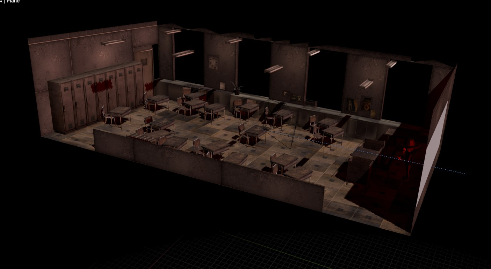
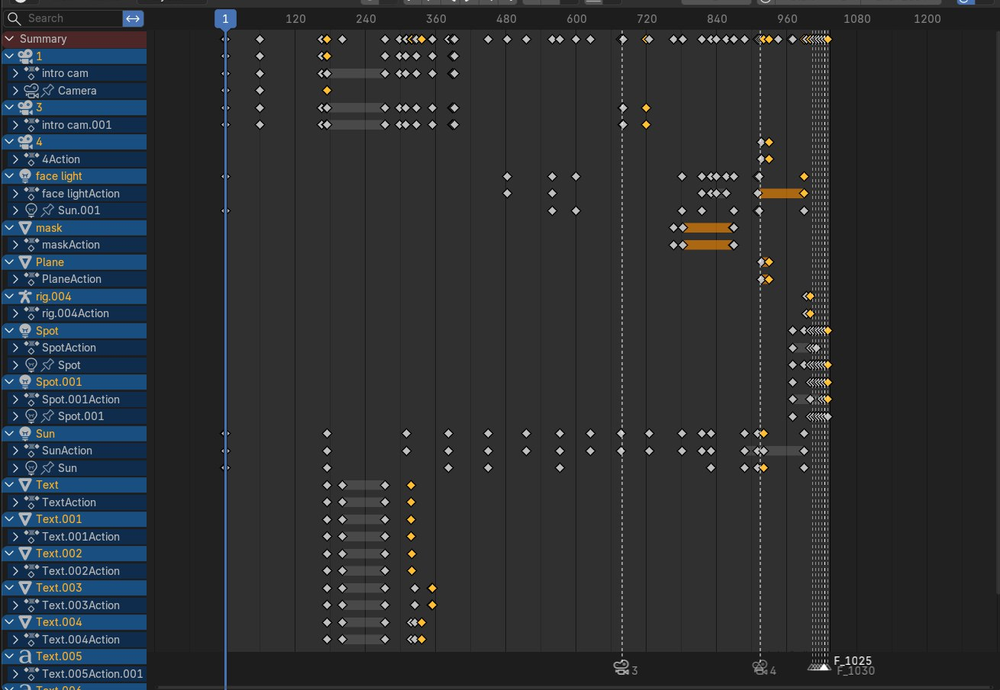
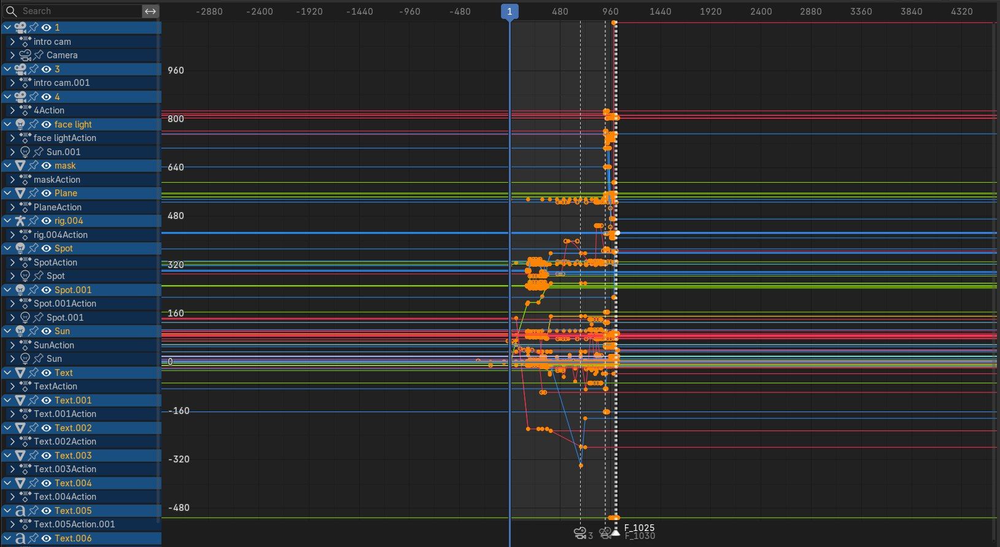
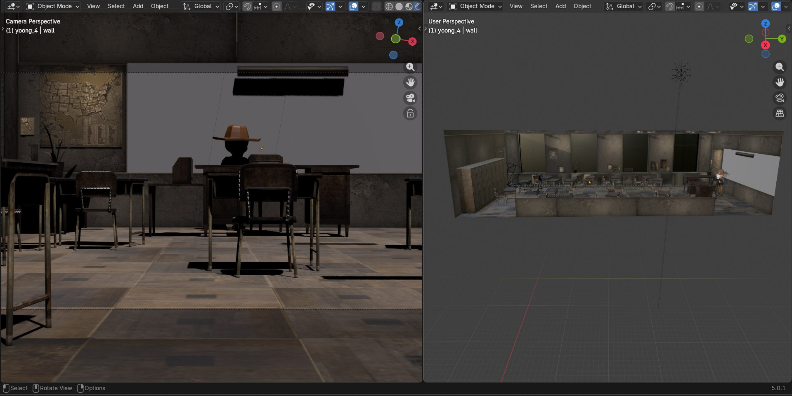

An in-depth look at character manipulation, dynamic camera configurations, and staging structures within Blender.
This project isolates advanced viewport staging pipelines to focus heavily on character manipulation, keyframed animation weight distribution, and high-impact cinematic rendering setups. By establishing distinct structural properties across constraints, the resulting animation offers professional storytelling flow and seamless interaction values.
Visual steps highlighting key phases of the staging development process:

Configuring spatial references, initial lighting orientations, and camera focal boundaries to map out keyframed motion pathways securely.

Manipulating weight bones and keyframe vectors to capture natural articulation, acceleration curves, and secondary movement impacts.

Choreographing multiple camera angles and dynamic speed paths to maximize visual impact and maintain fluid narrative focus.

Balancing shadow thresholds, emission nodes, and noise samples to output a polished, high-fidelity visual sequence quickly.